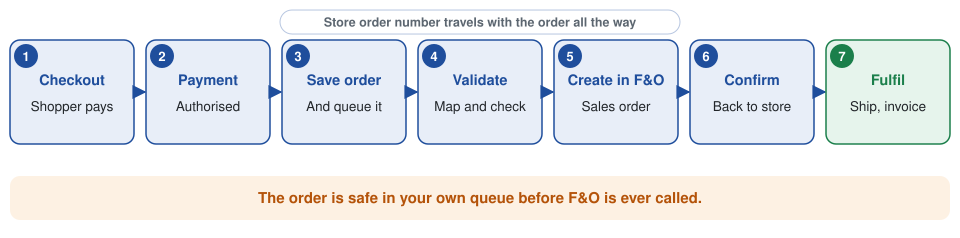
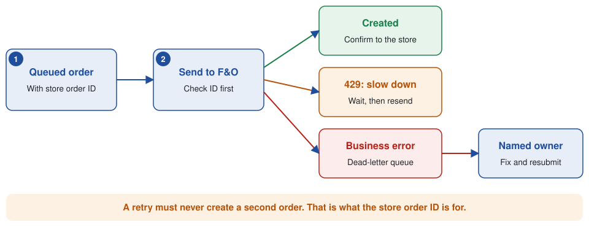
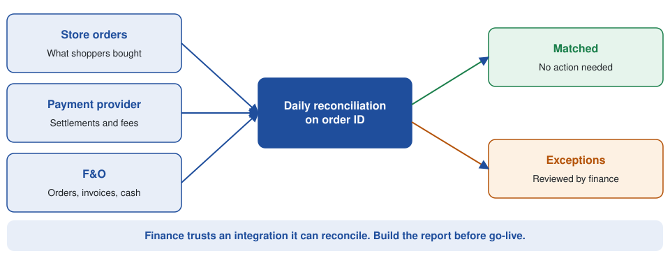

Integrating Your E-Commerce Website with Dynamics 365 F&O, Part 2: Build, Test and Run
Part 1 settled the architecture: who owns what, which pattern to use and how fast each flow needs to be. Part 2 is about building it and keeping it healthy: how an order travels from checkout into Finance and Operations, how to stop duplicates, how to cope with throttling and failures, and how to prove to finance that the numbers agree. If you have not read it, start with Part 1.
1. Follow one order from end to end

- Checkout and payment. The shopper pays through your payment provider. Authorise (or capture) there, and record the provider’s reference.
- Save and queue. Write the order to your own database and place a message on a queue. From this point the sale is not lost, whatever happens to F&O.
- Validate and map. The integration layer checks the order: known item codes, valid addresses, tax and delivery codes, customer account. It maps store fields to F&O fields.
- Create the sales order. The layer calls F&O to create the sales order header and lines, for example through the sales order header and line data entities (SalesOrderHeadersV2 and its lines) exposed over OData. For a very large or wide import, F&O’s Data management framework is an alternative.
- Confirm back. Store the F&O sales order number against the store order, and send the shopper their confirmation.
- Fulfil and invoice. F&O picks, ships and invoices as normal. Status and tracking flow back to the store, ideally pushed from F&O events or on a short schedule rather than polled constantly.
The store order number travels on the F&O order, typically in a customer reference or a dedicated field added by an extension. That one decision makes almost everything else in this article possible.
2. Make every call safe to repeat
Networks time out. A call can succeed in F&O while the response is lost, and the integration retries. Without protection you now have two sales orders and a customer who is charged once but shipped twice. Prevent it:
- Before creating an order, look up the store order number in F&O. If it exists, treat the call as already done.
- Keep your own status per order (queued, sent, confirmed, failed) so a restart knows where to continue.
- Consider a uniqueness check on the reference in F&O, added as an extension, so a duplicate cannot be created even if the integration misbehaves.
3. Expect throttling and plan for it
F&O protects itself with service protection limits. When a caller is making too many demanding requests, F&O returns HTTP 429 (Too Many Requests) with a Retry-After header giving the number of seconds to wait. Microsoft’s guidance is to wait for that interval before resending, noting that retried requests are queued like any new request and get no priority, and that the wait depends on the demand over the preceding five minutes. For a non-interactive integration, that means pausing and resending rather than failing the order.

- Pace the sender. Start at a modest rate and raise it gradually, letting the Retry-After values tell you where the ceiling is.
- Respect the header rather than hard-coding a delay, and include a sensible fallback if it is missing.
- Smooth the peaks. This is the main reason for the queue: a flash sale can put hundreds of orders in a minute, and the queue lets F&O take them at its own pace.
- Keep requests lean. Create only what you need, and avoid unnecessary lookups inside the order path.
4. Separate temporary failures from real errors
- Temporary (throttling, timeouts, a service restart during an update): retry automatically with back-off.
- Business errors (unknown item, blocked customer, invalid delivery mode, closed period): do not retry blindly. Move the order to a dead-letter or error queue with a readable message.
- A named owner checks that queue daily, fixes the cause (often master data) and resubmits. Alert on queue depth and on orders older than a threshold, so a stuck order is found by you, not by the customer.
5. Keep prices and tax consistent
The most common finance complaint is that the order total on the website differs from the F&O invoice by a few cent. Avoid it by deciding which system calculates price, discount and tax, and making the other accept it. Two workable approaches: the store reads prices from F&O and sends the totals through unchanged, or the store calculates and F&O is told to accept the supplied amounts. Mixing the two is where rounding differences breed. Confirm VAT treatment, including any cross-border consumer sales, with your tax adviser and test it with real examples.
6. Payments, refunds and returns
- Payments: record what was taken, the provider reference and the fees. Providers settle in batches, net of fees and refunds, so cash in the bank rarely equals the sum of orders.
- Cancellations before shipping: decide how the store asks F&O to cancel, and what happens if the order is already picked.
- Returns: create a return order in F&O from the store’s return request, and trigger the refund only when finance rules say so. Link it to the original order.
7. Reconcile every day

A daily report that matches store orders, payment settlements and F&O orders and invoices turns a black box into something finance can trust. It catches the rare lost order, the duplicate and the refund that never reached the ledger while they are still small. Build it before go-live, not after the first month-end surprise.
8. Test and go live carefully
- Test with realistic data: real item codes, B2B and B2C customers, multi-line orders, discounts, split deliveries and awkward addresses.
- Test failure on purpose: switch F&O off mid-flow, send the same order twice, send an invalid item and confirm each behaves as designed.
- Load test to your peak plus a margin, watching queue depth and F&O response times.
- Go live gradually if you can: limited traffic first, with daily reconciliation, then open up.
- Have a manual fallback so orders can still be taken, and a rollback plan.
Common mistakes
- Calling F&O synchronously from the checkout page.
- No unique reference, so retries create duplicates.
- Syncing the whole catalogue every hour instead of the changes.
- Ignoring the 429 response, or retrying instantly in a loop.
- Letting price and tax be calculated in two places.
- No owner for the error queue.
- No daily reconciliation.
Frequently asked questions
How do I stop duplicate sales orders when the integration retries?
Carry the store’s order number on the F&O order, check for it before creating, keep your own status per order, and consider a uniqueness check in F&O as an extension.
What happens if F&O throttles my requests?
F&O returns HTTP 429 with a Retry-After header. Wait for that interval and resend, and use a queue so peaks are smoothed rather than rejected.
Which F&O entities create sales orders?
Commonly the sales order header and line data entities (SalesOrderHeadersV2 and its lines) over OData. For large imports, the Data management framework is an alternative. Choose after testing with your own volumes.
How do I keep website totals and F&O invoices in agreement?
Choose one system to calculate price, discount and tax and have the other accept the result unchanged, then test with real orders, including VAT cases.
Can you help build or rescue an e-commerce integration with F&O?
Yes. I work remotely with organisations across Ireland on Dynamics 365 integration, from architecture to go-live readiness.
Need help building or rescuing an e-commerce integration with Dynamics 365?
I provide independent architecture and delivery oversight for Dynamics 365 Finance and Operations integrations, including design reviews, error handling and reconciliation design, and go-live readiness checks, drawing on more than 30 years’ experience. Contact me at declan@feelyconsultants.com or on LinkedIn.
Feely Software Consultants · Ireland | Remote Dynamics 365 Consulting
More articles
- Integrating Your E-Commerce Website with Dynamics 365 F&O, Part 1: Architecture and Design Decisions
- Connecting Dynamics 365 CRM and Business Central: An Integration Guide
- Dynamics AX 2012 to Dynamics 365 Finance and Operations: How to Plan the Move
- ERP Data Migration: A Practical Approach That Holds Up at Go-Live